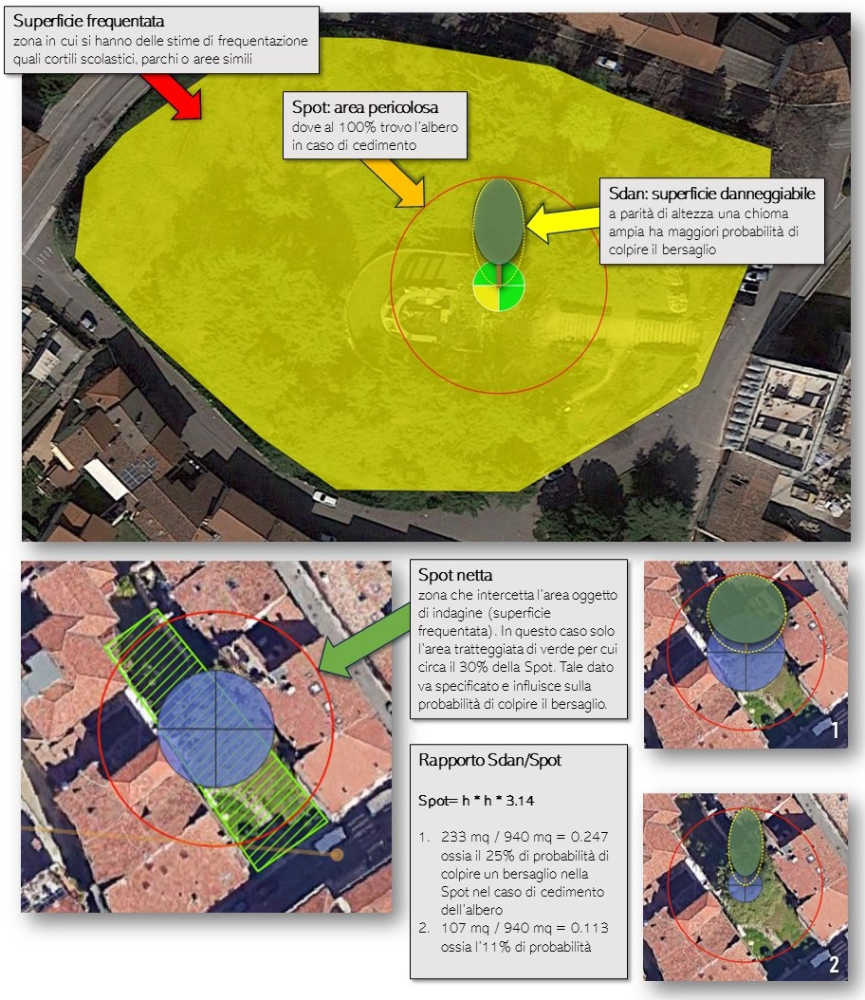

Plugin QGIS per la Valutazione del Rischio Arboreo
secondo il Protocollo Areté® v4.0 — ARBORETE®
Interroga Overpass API per strade, edifici, aree e POI nell'area di caduta di ogni albero.
Layer poligonale personalizzabile con parametri reali di frequentazione. Supporto metodo geometrico SPOT/SDAN.
Calcolo automatico dell'energia derivante dal cedimento dell'albero intero e della branca pericolosa.
Radici, colletto, fusto, branche — giudizio ordinario VRA e speditivo triage per ciascun settore.
Poligoni area di potenziale caduta (raggio = h albero) con stile cromatico Areté.
Layer VRA e CV prodotti automaticamente nel CRS UTM coerente con il layer sorgente.
© ALIAS ATP — rilasciato sotto licenza GPL 2.0.
Puoi usarlo, modificarlo e distribuirlo liberamente nel rispetto della GPL 2.0.
Repository: github.com/aliasatp/QgisTreeRisk
Segnalazioni: Issues GitHub
Il plugin riproduce parzialmente la logica del Protocollo Areté® — ARBORETE®. Il Protocollo è distribuito con licenza CC BY-NC-ND 4.0: non commerciale, nessuna opera derivata senza autorizzazione.
Citazione obbligatoria:
"Protocollo Areté® per la Valutazione del Rischio Arboreo [ver. 4.0] — ARBORETE® (protocolloarete.it)"
Scarica arete_vra_plugin.zip dalla pagina
Releases del repository GitHub.
Menu Plugin → Gestisci e Installa Plugin…
Seleziona la scheda Installa da ZIP, scegli il file scaricato e clicca Installa plugin.
Apri Processing → Cassetta degli Strumenti. Troverai il gruppo QgisTreeRisk con tre algoritmi:
QGIS 3.22+ (LTR consigliata: 3.28 o 3.34) oppure QGIS 4.x. Connessione internet per la stima automatica da OSM (Overpass API).
Avvia il dialog interattivo da Processing → QgisTreeRisk → Valutazione Rischio Arboreo.
Seleziona il layer puntuale degli alberi da valutare. Scegli come stimare la classe di Bersaglio:
B_man_alb / B_man_bra dalla tabella attributi; permette anche un valore fisso globale e il MoltiplicatorePer ogni parametro biometrico scegli tra campo del layer (dropdown) o valore fisso (spinbox):
Parametri della branca più critica:
Clicca Calcola VRA Areté v4.0. Al termine vengono aggiunti due layer:
Il plugin implementa due metodi alternativi per calcolare la classe di Bersaglio B quando il bersaglio è di tipo occupazione (persone stabili nell'area, es. parchi, cortili, pertinenze).
Impostare "8 ore/giorno di occupazione" su un parco da 10.000 m² è scorretto: quelle 8 ore si distribuiscono sull'intera area, mentre l'albero può cadere solo nella sua SPOT (raggio = h).
Il metodo geometrico corregge questo errore proporzionando l'occupazione all'area reale di influenza.
Calcolo del tasso di occupazione
Riferimenti da pag. 157 a 165 e da pag. 205 a 206: Valutazione e gestione del rischio arboreo. Manuale operativo. Gifor editriche - Arborete a cura di Sani L., 2020
La procedura descritta nei riferimenti menzionati non è parte integrante del Protocollo Areté, restituisce come risultato un tasso di occupazione e si basa sul calcolo delle probabilità.
La procedura è stata parzialmente modificata da ALIAS ATP che ha sostituito l'area di insidenza con la SPOT e introdotto la SDAN quale fattore che condiziona il calcolo probabilistico.

Con il metodo FLAT (2 ore flat) si otterrebbe B = 2 — sovrastimato.
Il metodo geometrico restituisce B = 3 (occupazione frequente), più aderente alla realtà: l'albero influenza solo il 14.8% del cortile, non l'intera superficie.